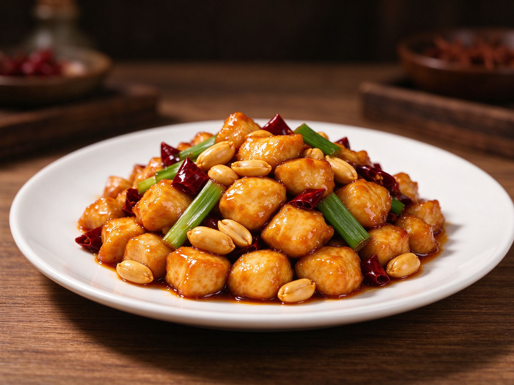
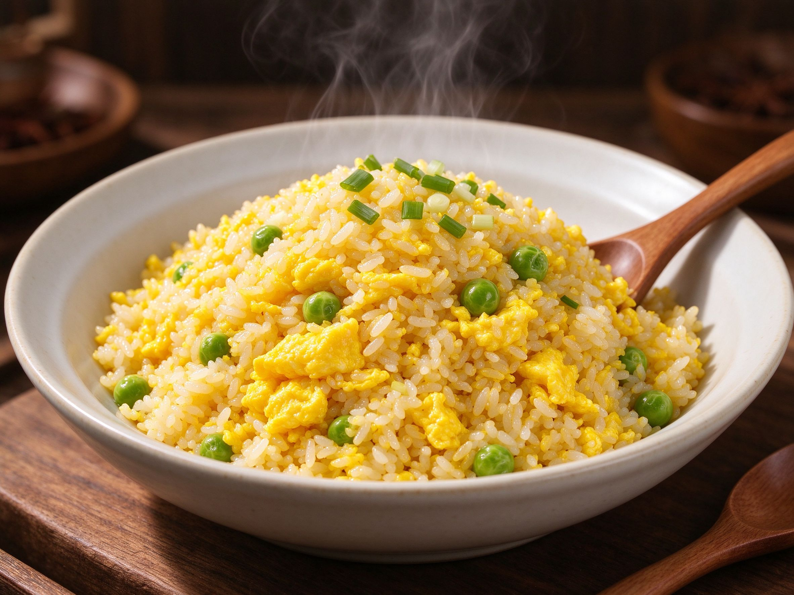
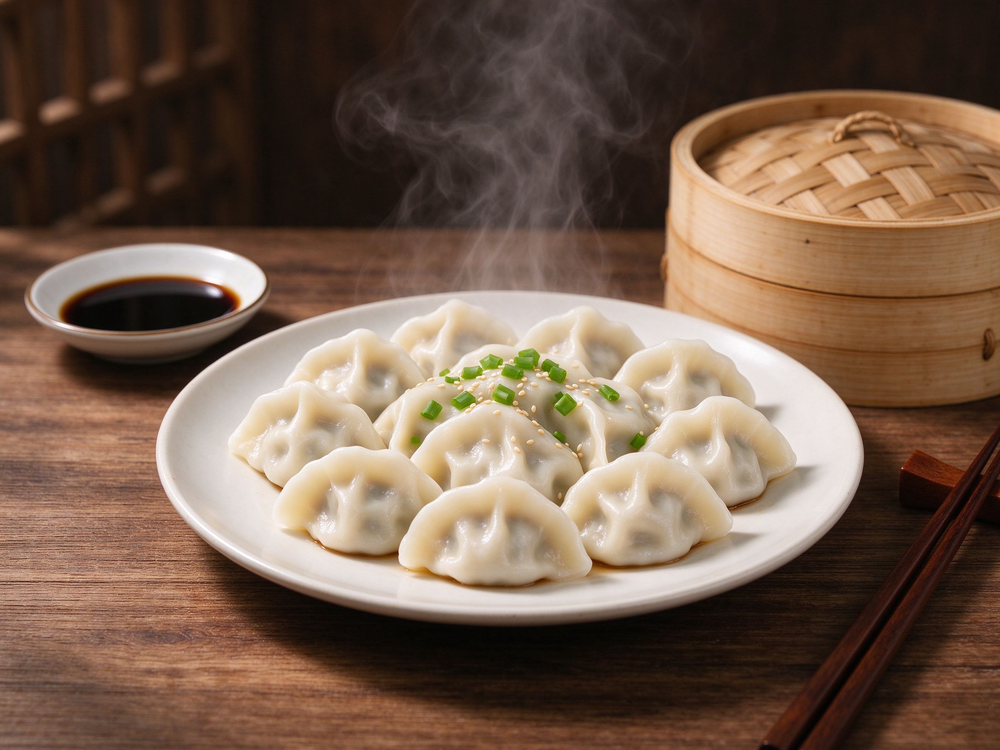
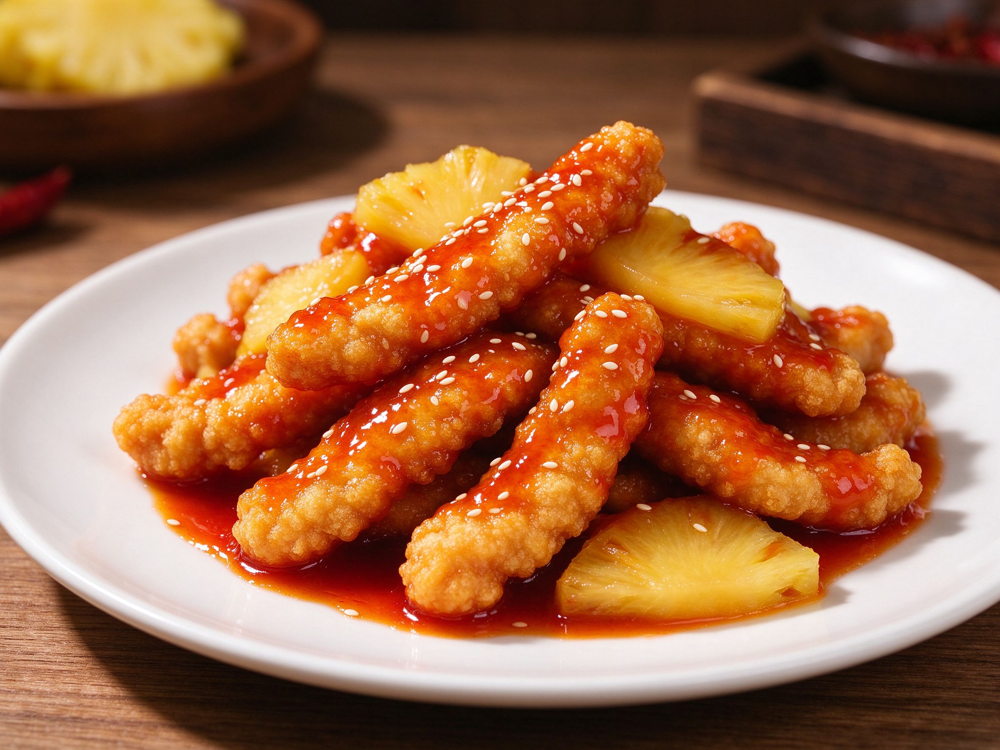
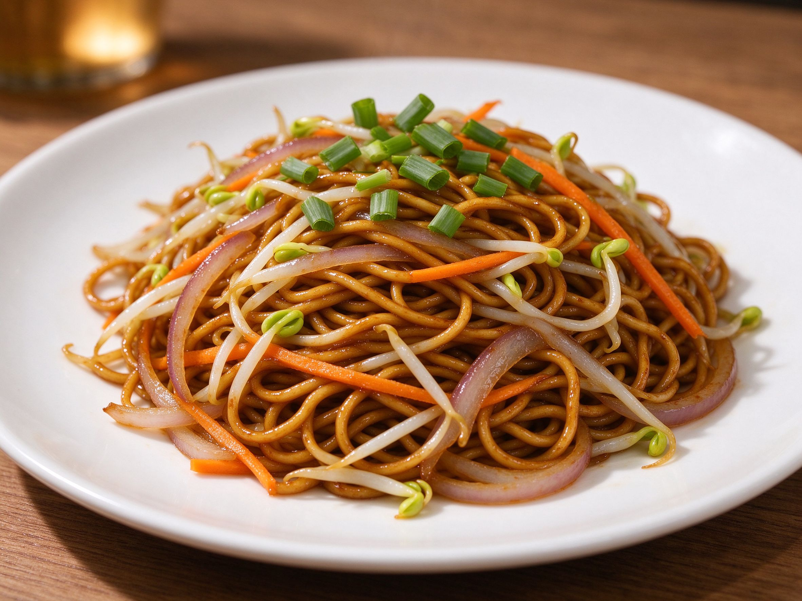
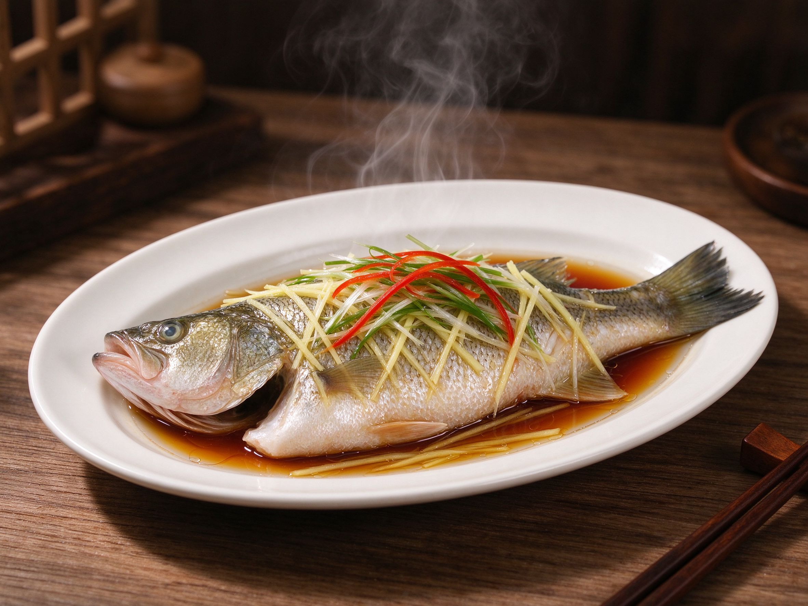

Real flavors, step by step
From weeknight stir-fries to weekend dim sum — everyday Chinese dishes anyone can cook.

Chinese Hot Pot at Home (火锅): A Beginner's Guide
The viral social meal, made easy at home — broth, sauces, ingredients, and how to host.
Read recipe →
Dim Sum 101 (点心): A Beginner's Guide
The Cantonese tradition of small, delicious bites — what to order and how to enjoy it.
Read recipe →
Kung Pao Chicken (宫保鸡丁)
Tender chicken, crunchy peanuts, and a glossy sweet-spicy Sichuan sauce.
Read recipe →
Tomato Egg Stir-Fry (番茄炒蛋)
The ultimate Chinese comfort dish — soft eggs and juicy tomatoes in minutes.
Read recipe →
Perfect Egg Fried Rice (蛋炒饭)
The classic — fluffy rice, silky eggs, and that signature wok flavor, step by step.
Read recipe →
Homemade Dumplings (饺子) From Scratch
Juicy pork and chive dumplings — dough, filling, and folding made easy.
Read recipe →
5 Easy Chinese Noodle Recipes
From dan dan to zhajiangmian — five quick, comforting noodle bowls.
Read recipe →
Sweet and Sour Pork (糖醋里脊)
Crispy, tangy, and glossy — the classic takeout favorite made better at home.
Read recipe →
Mapo Tofu (麻婆豆腐)
Silky tofu in a spicy, numbing Sichuan sauce — authentic and comforting.
Read recipe →
Chow Mein (炒面): Stir-Fried Noodles
Crispy, saucy noodles with vegetables — the takeout classic at home.
Read recipe →
Chinese Steamed Fish (清蒸鱼)
Delicate, juicy, and elegant — the classic Cantonese dish made simple.
Read recipe →
Classic Chicken Corn Soup
A silky, comforting soup with shredded chicken and sweet corn — family favorite.
Read recipe →